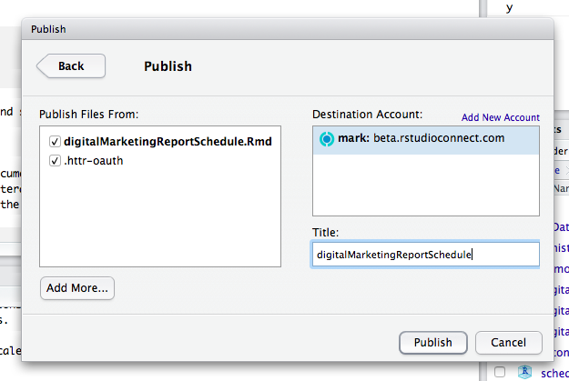

googleAnalyticsR can be used to generate reports in RMarkdown documents.
The default clientId that comes with the package can not be used for non-interactive use such as server scripts or RMarkdown. This is due to abuse of the free quota that used up the quota for everyone. This means you will need to set up your own clientId.
See setting up your own Google Project - the easiest method is to use ga_auth_setup().
If you are building Rmd’s in the same environment as you use interactively, then the Rmd can reuse that.
You need to avoid the interactive menu when using RMarkdown - so you will need your own clientId and to specify the email you have authenticated with that clientId to skip it e.g. ga_auth(email="me@work.com")
---
title: "Google Analytics Report"
author: "Mark Edmondson"
date: "8 July 2016"
output: html_document
---
```{r}
knitr::opts_chunk$set(echo = TRUE)
library(googleAnalyticsR)
## specify an email you have already authenticated with once outside of Rmd
ga_auth(email="me@work.com")
...perform API actions...
```
Two files are usually needed when authenticating in a server:
The recommended workflow for authentication in RMarkdown is:
ga_auth_setup() option 1 to help you find and download a clientId file. Put this safe in a global location that you can use for general use with the package, including interactive usega_auth_setup() option 3 to generate a service key file from the clientId file you created in step 1. Put this is a safe location out of your project folder. Note the email you created for your service key file - it will look like {the_name}@{your-project-id}.iam.gserviceaccount.com
ga_auth_setup() option 5 to add the service email from step 2 ({the_name}@{your-project-id}.iam.gserviceaccount.com) as a user for your Google Analytics account.ga_auth(json_file="auth_file.json")
Use ga_auth_setup() to create a client.id and auth service key.
Use the service key file location via ga_auth(json_file="your_key.json") to authenticate instead of an email.
```{r}
knitr::opts_chunk$set(echo = TRUE)
library(googleAnalyticsR)
# we don't need to set the client.id as it takes it from the service key
# service JSON email needs to be added as a user of the viewId to work
ga_auth(json_file="auth_key.json")
...perform API actions...
```
To see the reports online, you can upload RMarkdown documents to Shiny servers or shinyapps.io, to perhaps run on a schedule.
The recommend method for authentication is to use service accounts and ga_auth(json_file="your_key.json") since this is easier and more secure in the long run.
However, if you want to continue using your email cached credentials, you need to ensure that the authentication cache file is present when uploaded. This can be specified in the meta data via resource_files in the Rmd yaml.
Since the token is not saved at a project level since v0.7.0 you will need to move or specify the cache folder for the tokens. The cache folder is usually at the global location ~/.R/gargle/gargle-oauth. Via gargle options, this needs to be changed for a project folder via:
options(gargle_oauth_cache = ".secrets")
This will then create a project folder containing cache. Upload this to the server.
---
title: "Google Analytics Report"
author: "Mark Edmondson"
date: "8 July 2016"
output: html_document
resource_files:
- .secrets/4324vfdv425v45wvrwer
---
Then when you upload to Shiny Server or shinyapps.io, you should see the file in your upload choices:

See details on gargle vignette
However, the recommend method is to use service accounts and ga_auth(json_file="auth_key.json") when using a server since this is easier and more secure in the long run. Upload the service JSON file instead of the cache folder.